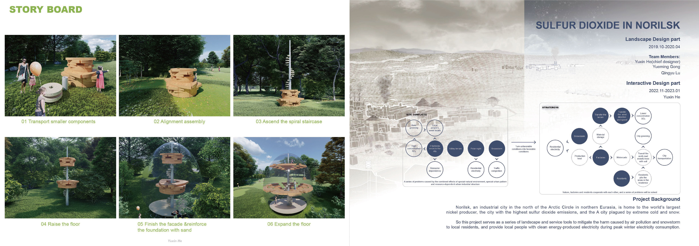
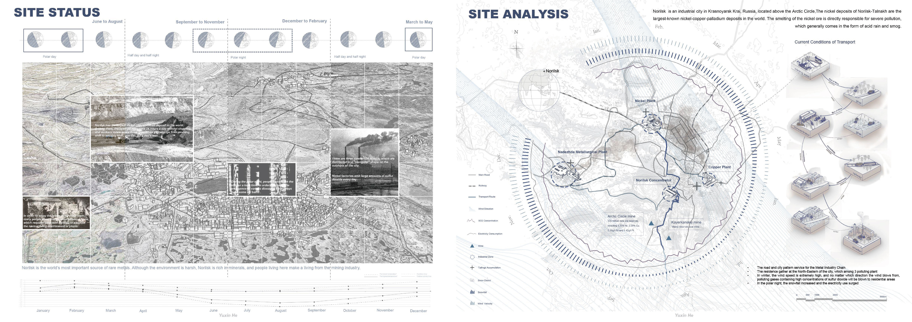
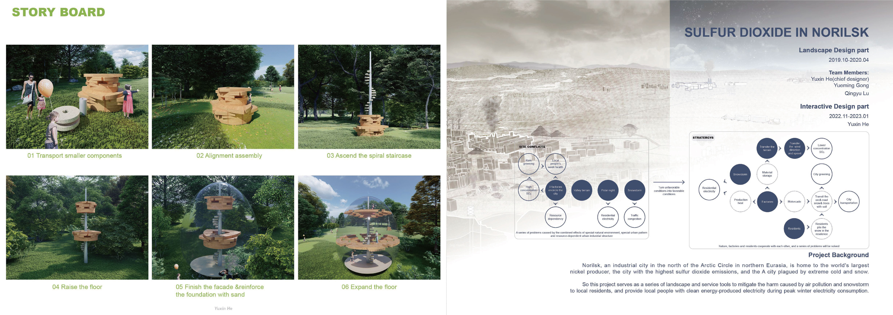
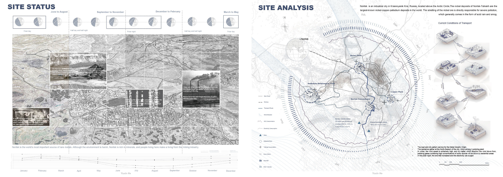
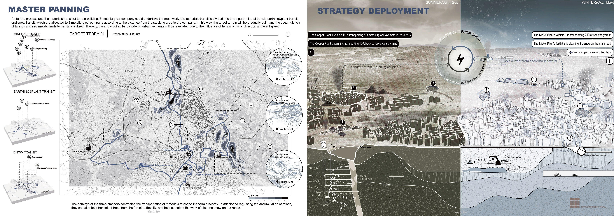
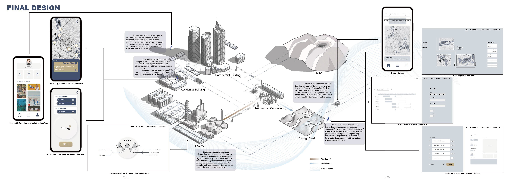
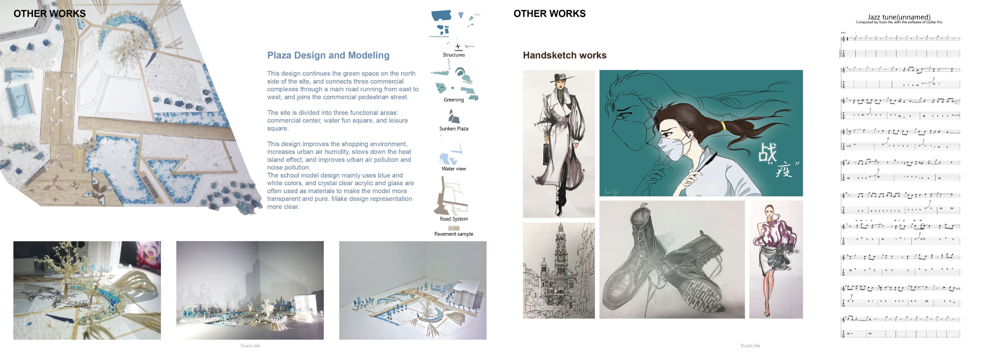
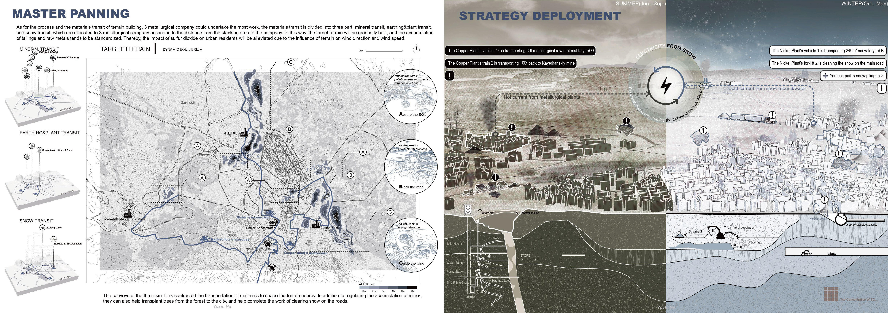
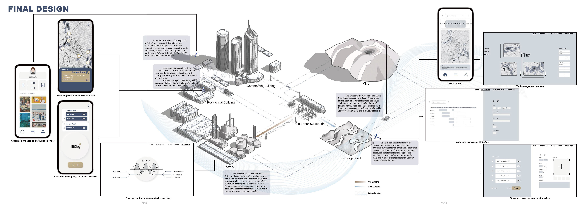
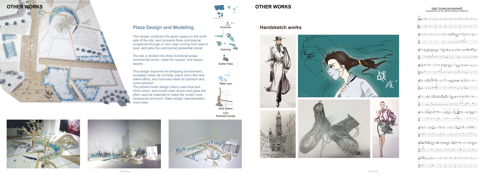

1. Wings & Wanes
该项目采用可互动的旋转盘，光和影使城市景观的变化生动起来，揭示了蝴蝶随着城市扩张而衰落的过程，旨在让用户了解城市化进程对蝴蝶种群的影响，以及更广泛的生态连锁反应。
Using an interactive carousel, where light and shadow bring to life changes in the cityscape, the project reveals the decline of butterflies as the city expands, aiming to educate users about the impact of urbanisation on butterfly populations and the wider ecological ripple effect.
2. Echoes of Silent Heart
该项目由象征牢笼的框架、残破的心脏隐喻和叙事性的声音设计组成，旨在让人感受到野生动物制品交易的背后，充斥的是受害动物无助的悲呼。
Consisting of a symbolic cage frame, a broken heart metaphor and narrative sound design, the project aims to give a sense of the helpless cries of the victimised animals that abound behind the trade in wildlife products.
3. Portfolio
该画册集合了多个设计项目，涉及领域涵盖机械设计、模型设计、景观设计、景观工程、页面设计、绘画和音乐作品。
This portfolio is a collection of design projects in the fields of mechanical design, modelling, landscape design, landscape engineering, page design, painting and music.

 



 




